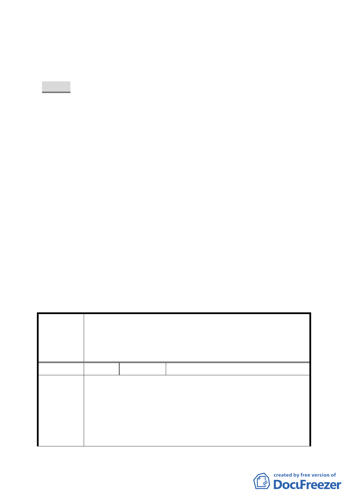

五、 公民或團體所提意見：計4件。
六、 辦理單位：臺北市政府。
七、 法令依據：都市計畫法第27條第1項第4款。
決議：
一、 本案除下列幾項應作修正外，其餘依市府本次提會審議資料
內容通過。
（一） 案內Ｂ區範圍住宅區臨汀洲路側留設騎樓之規定，請於
案內土地使用分區管制項下明訂。
（二） 本計畫區Ｂ區範圍內作為緊急救援道路之人行步道路型
調整順平，以強化防救災動線規劃。
（三） 計畫書第31頁土地使用分區管制事項，有關Ｂ區地下開
挖規模之規定，係屬臺北市都市設計及土地使用開發許
可審議委員會審議的範疇，請刪除。
（四） 計 畫 書 第 34 頁 Ａ 區 事 業 及 財 務 計 畫 表 開 闢 經 費 合 計 錯
誤，請修正。
二、 為兼顧案內更新地區土地所有權人參與更新之權益，本案將
配合Ｂ區範圍更新事業發布時程，再行公告細部計畫。
三、 公民或團體所提意見審決如後附綜理表。
臺北市都市計畫委員會公民或團體所提意見綜理表
變更臺北市中正區福河段二小段 608-23 地號等 63 筆部分土地
案
名
第三種住宅區為廣場用地、道路用地、人行步道用地、第三種
住宅區（特）及道路用地為第三種住宅區（特）、人行步道用
地細部計畫案
編 號1
陳情人 財政部國有財產局台灣北區辦事處
1. 查本案都市計畫變更範圍內有本局管理之中正區福和段二
小段 667-1、667-2 地號 2 筆國有土地，該 2 筆國有土地本
陳情理由
處已辦理出租，都市計畫使用分區由第三種住宅區變更為
廣場用地，有損國庫及承租人權益。
2. 次查使用分區管制之目的係為：規劃土地使用性質與強
度，以促進並維護都市土地得最適利用；穩定及維護土地
-3-